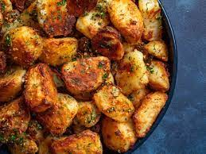

Back to menu
Oven Roasted Potatoes

Description
Delicious, extra crispy potatoes! It's easy, requires very little active cooking time, and uses mostly household ingredients!
Recipe derived from Kenji Lopez-Alt of Serious Eats.
Ingredients
- Extra Virgin Olive Oil
- Garlic
- Baking Soda
- Salt
- Potatoes
- Optional: Herbs! I recommend sage and thyme.
Steps
- Peel and chop potatoes into roughy equal pieces. The smaller the pieces, the lower the cooking time
- Bring water to a boil
- Add a few tablespoons of salt and a teaspoon of baking soda
- Parboil potatoes for 10-15 minutes. If a knife pierces the potato with little to no resistance they're ready
- While potatoes are boiling, mince your garlic (using a garlic crusher is fine)
- Add extra virgin olive oil to a pan, set the pan to medium heat, and add the garlic
- Add any herbs you wish to use. You could also add some chili flakes for some heat
- Cook until the garlic is just starting to turn golden brown, then strain the oil into a bowl
(keep the garlic and herbs, we'll use them again later)
- Add the potatoes to the bowl of oil and mix! You'll want a mashed-potato like consistency on the outside
- Put the potatoes on a rack and add them to an oven that's been preheated to about 200c
- Cook for 30-40 minutes, turning halfway through (actual cooking time depends on your oven and the size of the potatoes)
- Toss the potatoes with the garlic (and herbs) immediately after completion. You could optionally add fresh herbs too!
- Enjoy!